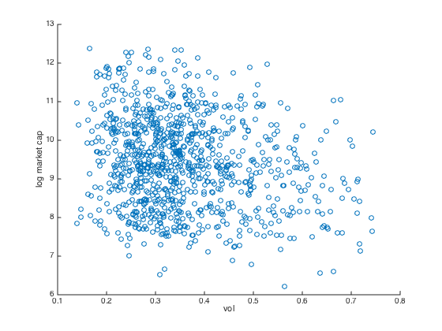

nion
nionMOM too good to be true?
More than 2, Cap weight v.s. Equal weight
I have been using two securities to construct a moment factor portolio. Here we want to see what happens when we extend the candidate list to more than 2 securities. The goal is to construct a proper momentum factor for U.S. equity market, analyze the performance, and be ready to implement in real world.
Contents
I load the U.S. data set.
load('data_equity_list_us.mat'); load('data_field_list.mat'); load('data_historical_data_us.mat');
Equal weight monthly rebalancing
I have been extracting the first two securities before, EXXON and WALMART. They are too perfect, let's extract 1000.
i=1; while i<=1000 index = i; security{i} = fints(history_us{index,1}(:,1),history_us{index,1}(:,2),regexprep(strcat('X',equity_list_us(index,1),equity_list_us(index,4)),'[^a-zA-Z0-9_]',''),'m','LAST_PRICE'); i = i+1; end px = merge(security{:}, 'SortColumns', 0);
generate portolio weight for equal weight portfolio is easy. At each date I assign 1 to the score, then I normalize it so the weight always sum up to 1.
score = fts2mat(px); score(not(isnan(score)))=1; norm= nansum(score')';
let's take a look at this norm.
plot(px.dates, norm); datetick('x') title('Number of Alive Companies')
This show how many alive company in my data at a given time. A great many of them came online during 80s and 90s.
we normalize the score by this number at each period, so the portfolio weight sum up to one.
score_norm = bsxfun(@rdivide, score, norm);
voila the portfolio weight equal weight portfolio.
portfolio_weight = score_norm;
Let's calculate the portfolio return
rt = tick2ret(px);
rt_mat = fts2mat(rt);
portfolio_rt_arithmetic = nansum((rt_mat.*portfolio_weight(1:end-1,:))')';
portfolio_rt_geometric = log(1+portfolio_rt_arithmetic);
portfolio_rt_ts = fints(rt.dates,portfolio_rt_geometric,'PortfolioReturn');
let's take a look at the performance
plot(cumsum(portfolio_rt_ts)) snapnow; plot(exp(cumsum(portfolio_rt_ts)))
the annual return of the portfolio and the sharpe ratio is
sqrt(12)*std(portfolio_rt_geometric) 12*mean(portfolio_rt_geometric) sqrt(12)*sharpe(portfolio_rt_geometric,0)
ans =
0.2058
ans =
0.1545
ans =
0.7518
this is too good to be true, even with the monthly rebalancing.
In fact I have benchmark index data that I can compare to.
load('data_benchmark.mat','storage') spx = fints(storage{1}{1}(:,1),storage{1}{1}(:,2),'SPX','d','S&P Monthly Data'); spx = tomonthly(spx); spx_rt = fts2mat(tick2ret(spx));
SPX's return and sharpe ratio:
sqrt(12)*std(spx_rt) 12*mean(spx_rt) sqrt(12)*sharpe(spx_rt,0)
ans =
0.1513
ans =
0.0896
ans =
0.5930
U.S. equity long term return is around 7%.
plot the two togather:
plot(cumsum(spx_rt)); hold on; plot(cumsum(portfolio_rt_geometric)); plot(cumsum(portfolio_rt_geometric-0.07/12)); hold off; legend('SPX','EqWeightPortfolio','EqWeightPortfolio-7%','location','northwest')
Too Good to be True!
Just by maintaining a equal weighted portfolio, we gained 5% extra annual return above cap weighted benchmark index? This is too good to be true. First let's see what happens if we ignore all price data that's below $1 mark.
score = fts2mat(px); score(score<1) = nan; score(not(isnan(score)))=1; norm= nansum(score')'; score_norm = bsxfun(@rdivide, score, norm); portfolio_weight = score_norm; portfolio_rt_arithmetic = nansum((rt_mat.*portfolio_weight(1:end-1,:))')'; portfolio_rt_geometric = log(1+portfolio_rt_arithmetic); portfolio_rt_ts = fints(rt.dates,portfolio_rt_geometric,'PortfolioReturn'); plot(cumsum(spx_rt)); hold on; plot(cumsum(portfolio_rt_geometric)); plot(cumsum(portfolio_rt_geometric-0.05/12)); hold off; legend('SPX','EqWeightPortfolio','EqWeightPortfolio-7%','location','northwest')
volatility return and sharpe:
sqrt(12)*std(portfolio_rt_geometric) 12*mean(portfolio_rt_geometric) sqrt(12)*sharpe(portfolio_rt_geometric,0)
ans =
0.1911
ans =
0.1281
ans =
0.6711
this bring the portfolio return down about 2%, by taking out a few 0.1->1 scenarios.
now let's see if we turn the rebalancing from monthly to annually, if the non sense stops.
px_annual = toannual(px); score_annual = fts2mat(px_annual); score_annual(score_annual<1)=nan; score_annual(not(isnan(score_annual)))=1; norm= nansum(score_annual')'; score_norm = bsxfun(@rdivide, score_annual, norm); portfolio_weight = score_norm; rt_annual = tick2ret(px_annual); rt_annual_mat = fts2mat(rt_annual); portfolio_rt_arithmetic = nansum((rt_annual_mat.*portfolio_weight(1:end-1,:))')'; portfolio_rt_geometric = log(1+portfolio_rt_arithmetic); portfolio_rt_ts = fints(rt_annual.dates,portfolio_rt_geometric,'PortfolioReturn'); spx_annual = toannual(spx); spx_rt_annual = fts2mat(tick2ret(spx_annual)); plot(cumsum(spx_rt_annual)); hold on; plot(cumsum(portfolio_rt_geometric)); hold off legend('SPX','EqWeightPortfolio','location','northwest')
Apparently, rebalance frequency has little to do with this non sense.
Capweight portfolio
S&P500, besides being rebalanced annually, is a cap-weighted index. Is this discrepancy we observe due to our bias toward smaller cap stock? Let's check it out.
let's load up the corresponding market cap data.
i=1; while i<=1000 index = i; security{i} = fints(history_us{index,1}(:,1),history_us{index,1}(:,3),regexprep(strcat('X',equity_list_us(index,1),equity_list_us(index,4)),'[^a-zA-Z0-9_]',''),'m','LAST_PRICE'); i = i+1; end cap = merge(security{:}, 'SortColumns', 0);
let's generate portfolio weight according to their market capitalization
score = fts2mat(cap); norm= nansum(score')'; score_norm = bsxfun(@rdivide, score, norm); portfolio_weight = score_norm; portfolio_rt_arithmetic = nansum((rt_mat.*portfolio_weight(1:end-1,:))')'; portfolio_rt_geometric = log(1+portfolio_rt_arithmetic); portfolio_rt_ts = fints(rt.dates,portfolio_rt_geometric,'PortfolioReturn'); plot(cumsum(spx_rt)); hold on; plot(cumsum(portfolio_rt_geometric)); hold off; legend('SPX','CapWeightPortfolio','location','northwest')
It tied up very nicely ...
Let's try once more with Equal Weight portfolio, ignore the very small cap.
what if we use market cap as an extra filter? say if market cap is under a certain cutoff, we doesn't take the securites in question into consideration, but still use equal weight, how would that portfolio performed? Let's see.
cap_mat = fts2mat(cap); cap_mat(bsxfun(@lt,cap_mat, prctile(cap_mat',2)'))=nan; px_mat = fts2mat(px); score = px_mat; score(score<1)=nan; score(not(isnan(score)))=1; score(bsxfun(@lt,cap_mat, prctile(cap_mat',10)'))=nan; norm= nansum(score')'; score_norm = bsxfun(@rdivide, score, norm); portfolio_weight = score_norm; portfolio_rt_arithmetic = nansum((rt_mat.*portfolio_weight(1:end-1,:))')'; portfolio_rt_geometric = log(1+portfolio_rt_arithmetic); portfolio_rt_ts = fints(rt.dates,portfolio_rt_geometric,'PortfolioReturn'); plot(cumsum(spx_rt)); hold on; plot(cumsum(portfolio_rt_geometric)); hold off; legend('SPX','EqWeightPortfolio_cap_filter','location','northwest')
volatility return and sharpe:
sqrt(12)*std(portfolio_rt_geometric) 12*mean(portfolio_rt_geometric) sqrt(12)*sharpe(portfolio_rt_geometric,0)
ans =
0.1843
ans =
0.1174
ans =
0.6381
well it doesn really help much.
Deeper dive.
let's take a look at returns.
plot(rt_mat);
let's take a look at the extreme value
index = find((max(rt_mat)>2)); i = 1; while i< size(index,2) subplot(2,1,1) plot(rt_mat(:,index(i))); subplot(2,1,2) semilogy(px_mat(:,index(i))); title(equity_list_us(index(i),1)); snapnow; i=i+1; end


extreme value is just part of the story, if we take out company in the list with extreme arithmetic return history.
we take those with 1 month return over 100% out of the picture. that's about 10% of the 1000 securities in questionm.
score = px_mat; score(score<1)=nan; score(not(isnan(score)))=1; score(bsxfun(@lt,cap_mat, prctile(cap_mat',10)'))=nan; score(:,(max(rt_mat)>1))=nan; norm= nansum(score')'; score_norm = bsxfun(@rdivide, score, norm); portfolio_weight = score_norm; portfolio_rt_arithmetic = nansum((rt_mat.*portfolio_weight(1:end-1,:))')'; portfolio_rt_geometric = log(1+portfolio_rt_arithmetic); portfolio_rt_ts = fints(rt.dates,portfolio_rt_geometric,'PortfolioReturn'); figure plot(cumsum(spx_rt)); hold on; plot(cumsum(portfolio_rt_geometric)); legend('SPX','EqWeightPortfolioMildly1','location','northwest')
volatility return and sharpe:
sqrt(12)*std(portfolio_rt_geometric) 12*mean(portfolio_rt_geometric) sqrt(12)*sharpe(portfolio_rt_geometric,0)
ans =
0.1731
ans =
0.1182
ans =
0.6840
We can 'mild' it down further
score = px_mat; score(score<1)=nan; score(not(isnan(score)))=1; score(bsxfun(@lt,cap_mat, prctile(cap_mat',10)'))=nan; score(:,(max(rt_mat)>0.15))=nan; norm= nansum(score')'; score_norm = bsxfun(@rdivide, score, norm); portfolio_weight = score_norm; portfolio_rt_arithmetic = nansum((rt_mat.*portfolio_weight(1:end-1,:))')'; portfolio_rt_geometric = log(1+portfolio_rt_arithmetic); portfolio_rt_ts = fints(rt.dates,portfolio_rt_geometric,'PortfolioReturn'); plot(cumsum(spx_rt)); hold on; plot(cumsum(portfolio_rt_geometric)); hold off; legend('SPX','EqWeightPortfolioMildly1','location','northwest')
volatility return and sharpe:
sqrt(12)*std(portfolio_rt_geometric) 12*mean(portfolio_rt_geometric) sqrt(12)*sharpe(portfolio_rt_geometric,0)
ans =
0.1240
ans =
0.0824
ans =
0.6651
The Sharpe is not changing much, even though the return is now lowerrrr....
Those are the securities being used.
index = find((max(rt_mat)<0.15)); i = 1; while i< size(index,2) subplot(2,1,1) plot(rt_mat(:,index(i))); subplot(2,1,2) semilogy(px_mat(:,index(i))); title(equity_list_us(index(i),1)); snapnow; i=i+1; end figure plot(log(px_mat(:,max(rt_mat)<0.15))) snapnow;
Is it really too good to be true?
Let's take a moment before we cast double on the result.
I know that abnormal data point do exist, and those 0.1->1 dollar in one month point contributes to error. But once I correct those data points, the resulting equal weight portfolio's sharpe is not very far from the S&P. equal weight portfolio has 3~5% higher annual return simply because, by loading up small caps, it assumed more risk than cap weighted benchmark. In fact:
cap_median = nanmedian(cap_mat); vol = sqrt(12)*nanstd(rt_mat); vol(vol>0.75)=nan; scatter(vol, log(cap_median)); xlabel('vol'); ylabel('log market cap');
The very large cap tend to be less volatile.
Let's bring equal weight to the equal footing as SPX in terms of risk.
score = fts2mat(px); score(score<1) = nan; score(not(isnan(score)))=1; norm= nansum(score')'; score_norm = bsxfun(@rdivide, score, norm); portfolio_weight = score_norm; portfolio_rt_arithmetic = nansum((rt_mat.*portfolio_weight(1:end-1,:))')'; portfolio_rt_geometric = log(1+portfolio_rt_arithmetic); deleverage = std(spx_rt)/std(portfolio_rt_geometric); portfolio_rt_adjusted = deleverage*portfolio_rt_geometric; plot(cumsum(spx_rt)); hold on; plot(cumsum(portfolio_rt_geometric)); plot(cumsum(portfolio_rt_adjusted)); hold off; legend('SPX','EqWeightPortfolio','EqWeightPortfolioAdj','location','northwest')
portfolio volatility, return & sharpe.
disp([sqrt(12)*std(spx_rt) sqrt(12)*std(portfolio_rt_geometric) sqrt(12)*std(portfolio_rt_adjusted)]) disp([12*mean(spx_rt) 12*mean(portfolio_rt_geometric) 12*mean(portfolio_rt_adjusted)]) disp([sqrt(12)*sharpe(spx_rt,0) sqrt(12)*sharpe(portfolio_rt_geometric,0) sqrt(12)*sharpe(portfolio_rt_adjusted,0)])
0.1513 0.1911 0.1513
0.0896 0.1281 0.1014
0.5930 0.6711 0.6711
The post is long winded, but we are now more comfortable with the data set. With that, we can now move on to construct the MOM.